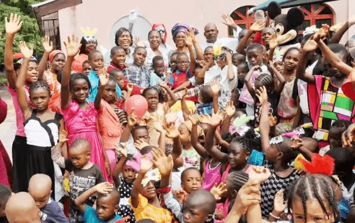

يوم الطفل في يولا
الاحتفاء بقادتنا في المستقبل
تركيز الحدث: الاحتفاء بالأطفال وتعزيز حقوقهم ورفاهيتهم وتطورهم من خلال الأنشطة الممتعة والبرامج التعليمية.
نظرة عامة على الحدث
يوم الطفل هو احتفال سنوي في يولا يجمع الأطفال من مدارس ومجتمعات مختلفة في يوم من المرح والتعلم والأنشطة الثقافية.

أنشطة الحدث
- العرض العسكري: عروض المدارس والعروض التقديمية
- الفعاليات الثقافية: الرقصات والأغاني التقليدية
- الأحداث الرياضية: المسابقات بين المدارس
- الألعاب التعليمية: التعلم من خلال اللعب
- معارض الفن: عرض أعمال فنية للأطفال
أبرز الحدث
- عروض المدارس والعروض التقديمية
- توزيع الهدايا على الأطفال
- جوائز الاعتراف الخاصة
- الانتعاش والترفيه
- الورش التعليمية
المنظمات المشاركة
- المدارس المحلية والمؤسسات التعليمية
- الوكالات الحكومية
- منظمات حقوق الطفل
- مجموعات المجتمع والمنظمات غير الحكومية
تأثير الحدث
- تعزيز الوعي بحقوق الطفل
- تعزيز التكامل المجتمعي
- تشجيع تطوير المواهب
- بناء الثقة في الأطفال
- إنشاء ذكريات دائمة